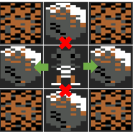
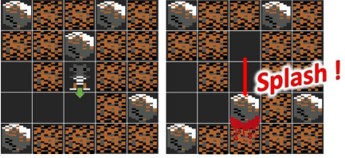

Pour jouer, utiliser les touches suivantes :
Chaque niveau est représenté par une grille de 32 x 16 cases. Chaque case peut contenir :
Rockford se déplace d’une case à la fois, horizontalement ou verticalement :
Rockford peut se déplacer sur les cases vides :
Rockford peut également creuser les cases de terre qui deviennent vides après son passage :
Rockford peut également pousser les rochers horizontalement mais pas verticalement :

Rockford ne peut pousser un rocher que s’il n’y a rien derrière ce dernier :
Lorsqu’un rocher est dans le vide (si les case en dessous sont vides), le rocher tombe jusqu’à la prochaine case contenant de la terre, un rocher ou un diamant :
Si Rockford se trouve plus d’une case en dessous d’un rocher, il sera écrasé par ce dernier :

Si le joueur est écrasé, le niveau reprend du début.
Enfin, si Rockford passe sur un diamant, il collecte ce dernier et la case devient vide après son passage :
Lorsque tous les diamants du niveau ont été ramassés, le joueur passe au niveau suivant.